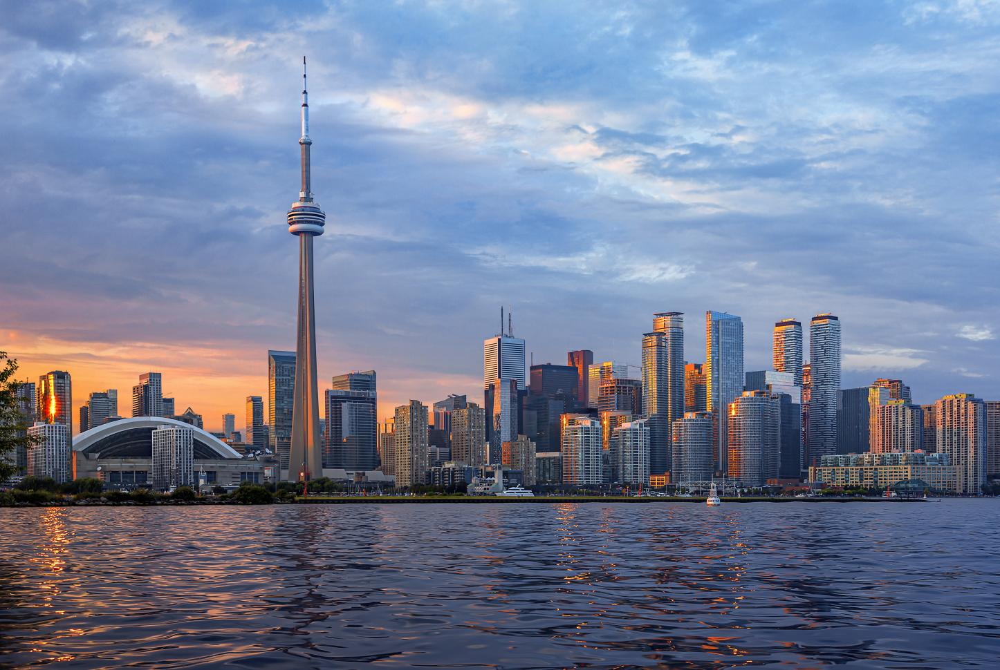
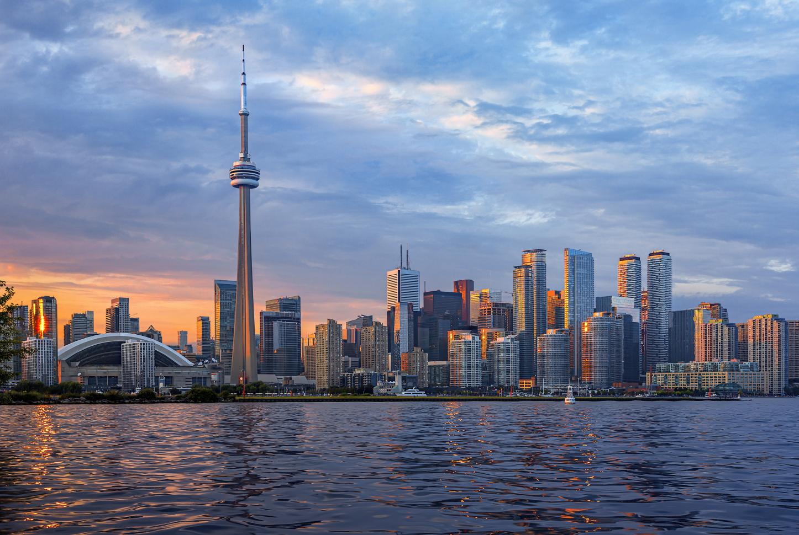

CANADA

The expanse of Canada's natural beauty, from mountains and glaciers to secluded lakes and forests, is almost unparalleled worldwide. But Canada's allure is not just the great outdoors. Canada has cosmopolitan cities that are clean, safe, friendly, and multicultural. In fact, Canada repeatedly is lauded as one of the world's most livable countries. Whether your interests are river rafting or live theater, Canada won’t disappoint.
Canada has many modern, multicultural cities, each with its own distinct personality. Toronto, Montreal, and Vancouver are possibly the best-known, but there are so many others that highlight different aspects of Canada, such as its maritime culture, mountainous landscape, French history, or its indigenous people. Each city is delightful for different reasons.
In addition, Canadian cities are generally much smaller than the biggest counterparts in the United States, so they are easy to navigate. Canadian people, even in big cities, tend to be friendly to strangers, and crime is relatively low.
 
